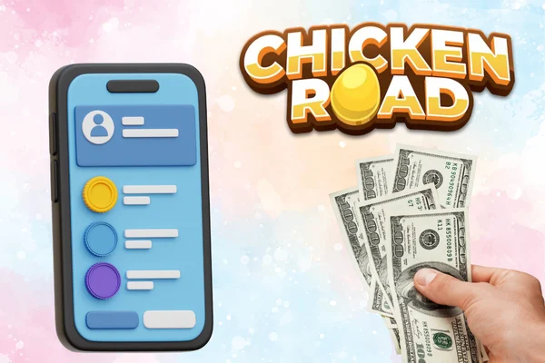

Chicken Road – the ultimate Chicken Road Game in Canada
- Complete guide to the most popular crossing game in Canada
The Chicken Road game has conquered the hearts of Canadian players and has become one of the most sought-after online gaming experiences for everyone looking for excitement and potential winnings. This innovative game combines simple mechanics with strategic depth, making it accessible to beginners while offering complexity for experienced players. In Canada, Chicken Road has gained enormous popularity due to its unique gaming principle and potential for solid wins.
Originally developed by Inout Games in 2022, Chicken Road has enchanted Canadian players with its distinctive concept, where players watch a chicken crossing the road with a growing multiplier that can drop at any time. The tension of deciding when to cash out creates an adrenaline-filled experience that has made Chicken Road particularly popular among gaming enthusiasts across Canada, from Toronto to Vancouver and Montreal.
Lucky Wins Casino
Welcome bonus CAD $500 free + CAD $200 for account verification
Top Canadian casino with Chicken Road game available immediately after registration. Fast withdrawals and 24/7 customer support in English.
Canadian license, instant withdrawals, English support
Jackpot City Casino
Welcome bonus 150% up to CAD $1,600 + 100 free spins
Premium Canadian casino with exclusive bonuses for Chicken Road players. Top-notch graphics and stable platform with English language support.
Exclusive bonuses, English support, fast transactions
ToonieBet Casino
Welcome bonus 100% up to CAD $1,000 + 75 free spins
Legendary Canadian gaming platform with Chicken Road in the main offer. Stable connection and premium conditions for Canadian players.
Best platform, premium conditions, VIP program
Grizzly's Quest Casino
Welcome bonus 200% up to CAD $2,000 + 150 free spins
Exclusive Canadian casino with the highest bonuses for Chicken Road. Instant withdrawals and personal approach for Canadian players.
Highest bonuses, personal approach, Canadian license
Chicken Road Casino – where to play Chicken Road in Canada
Choosing the right casino to play Chicken Road is crucial for a safe and enjoyable gaming experience in Canada. With the game's growing popularity, various platforms have emerged offering Chicken Road to Canadian players.
Top Chicken Road Game Casinos in Canada
- üé∞ Lucky Wins Casino - Canadian license, instant withdrawals, best customer support
- üé∞ Jackpot City - Exclusive bonuses, stable platform, English interface
- üé∞ ToonieBet - Long-standing tradition, VIP program, premium conditions
- üé∞ Grizzly's Quest - High bonuses, personal approach, Canadian license
What is Chicken Road?
Chicken Road is a crossing-style betting game that has revolutionized online gaming in Canada. Unlike traditional casino games, Chicken Road offers a unique social gaming experience where players can see other players' bets and cashouts in real-time, creating a community atmosphere that is particularly appealing to Canadian players who enjoy shared gaming experiences.
Gameplay, Features, and Graphics
The basic mechanics of Chicken Road are elegantly simple yet strategically deep. Players place their bets before the round starts, then watch as the chicken begins crossing the road with a growing multiplier. The crucial decision comes when players must decide whether to cash out before the chicken gets hit by traffic. Each round has a randomly generated crash point where the multiplier resets to zero.
Sound, Controls, and User Experience
Chicken Road features smooth animations and vibrant graphics that bring the game to life. The audio design complements the visual experience with appropriate sound effects signaling important game events. Controls are intuitive and responsive, with auto-cashout options available for strategic players.
Chicken Road Promo Code and Bonuses
Bonuses and promo codes represent a great opportunity to increase your gaming budget and extend your gaming experience in Chicken Road.
How to Use Chicken Road Promo Codes
- üéÅ Welcome Bonuses - Automatically after registration and first deposit
- üìß Newsletter - Regular bonuses for email subscribers
- ü§ù Partner Sites - Exclusive codes on gaming portals
- üì± Social Media - Follow casinos on Facebook and Instagram
- üéÆ Gaming Tournaments - Special codes for tournament participants
Bonus Strategies in Chicken Road Casino
| Bonus Type | Description | Best For |
|---|---|---|
| Free Spins | Free spins on selected games, no risk | Beginners |
| Free Money | Small amount free to play with | New players |
| Cashback | Return percentage of losses | Regular players |
| VIP Rewards | Exclusive rewards for loyal players | High-volume players |
Chicken Road App – play on the go
Downloading the Chicken Road mobile app for Android and iOS devices allows Canadian players to enjoy the game anytime, anywhere.
Download options and mobile compatibility
- üì≤ Official Sources - Download only from official casino websites or app stores
- üîí Security Settings - Enable installation from unknown sources only for trusted apps
- üìã Permissions - Check what permissions the app requires
- üîÑ Updates - Regularly update the app to the latest version

Is Chicken Road Game Legit?
The question of Chicken Road's legitimacy is one of the most common among Canadian players. The original Chicken Road game is legitimate when played on licensed platforms.
Chicken Road Game Legit – Facts and Expert Opinions
- üö© Missing License - No information about license holder
- üö© Incomplete Contact Details - Missing physical address or phone
- üö© Overly High Bonuses - Unrealistically high bonus offers
- üö© Poor Translation - Errors in English language and grammar
- üö© Pressure for Immediate Action - Urgent calls to register and deposit
Chicken Road Review – Player Experiences
"I've been playing Chicken Road for about six months now, mainly at Lucky Wins Casino. The game is incredibly fun, but I learned about predictor scams the hard way. Stick to official apps and avoid any tools that promise guaranteed wins." - Peter N. from Toronto ⭐⭐⭐⭐
"As a player from Canada, I was initially skeptical about Chicken Road, but demo mode at Jackpot City allowed me to learn the game without risk. I developed a conservative strategy and I'm up about CAD $800 after three months. The key for me was strict bankroll management." - Michelle K. from Vancouver ⭐⭐⭐⭐⭐
Chicken Road Gambling Game – Tips and Strategies
While Chicken Road is primarily a game of chance, there are strategies that can help Canadian players maximize their chances of success and minimize losses.
Responsible gaming guidelines and practical advice
- Set Limits - Predetermine maximum loss and target win before playing
- Use Auto-cashout - Automatic cashout when reaching set multiplier
- Spread Bets - Instead of one large bet, make several smaller ones
- Analyze Trends - Watch round history for better feel for the game
- Play with Cool Head - Avoid playing under influence of emotions or fatigue
Best strategies for Chicken Road game
Canadian players have found success with conservative betting strategies that focus on consistent small wins rather than chasing large multipliers. Setting automatic cashout points at 1.5x to 2x multiplier provides steady returns without excessive risk.
Frequently Asked Questions (FAQ)
Is Chicken Road game a scam or legitimate?
Chicken Road is a legitimate game from a verified developer when played on licensed platforms in Canada. Always play only on verified platforms with appropriate licenses. Look for casinos regulated by reputable authorities and check independent reviews.
Where can I play Chicken Road legally in Canada?
Chicken Road is available on several licensed platforms that accept Canadian players. The best include Lucky Wins Casino, Jackpot City, ToonieBet, and Grizzly's Quest. These platforms offer full English localization, accept CAD currency, and provide Canadian-friendly payment methods.
Is there a free Chicken Road demo?
Yes, most platforms offer a demo version of Chicken Road where you can try the game for free without risk using virtual tokens. The demo version is ideal for familiarizing yourself with game mechanics before playing for real money.
How to get Chicken Road promo code 2025?
Promo codes are available through official partners, casino bonus pages, or during special promotions. Subscribe to casino newsletters and follow social media accounts for exclusive Canadian promo codes.
How can I tell if a Chicken Road casino isn't a scam?
A legitimate casino has a valid license, transparent terms and conditions, verified contact details, and positive reviews. Check for SSL encryption, regulatory logos, verify operating history, and read independent reviews from trusted sources.
What payment methods are available for Canadian Chicken Road players?
Popular payment methods include Interac e-Transfer, credit/debit cards (Visa, Mastercard), e-wallets (PayPal, Skrill, Neteller), cryptocurrency options (Bitcoin, Ethereum), and direct bank transfers. Most casinos process Interac withdrawals within 24-48 hours.
Can I play Chicken Road on mobile without downloading an app?
Yes, Chicken Road is fully optimized for mobile browsers and works excellently on smartphones without downloading an app. The mobile browser version offers the same features as desktop with responsive design.
What's the difference between Chicken Road and other crossing games?
Chicken Road is distinguished by its unique chicken theme, social elements showing other players' actions in real-time, and faster gameplay. The visual presentation and user interface are significantly different from other games in the genre.
Is Chicken Road available in French for Quebec players?
Many Canadian casinos offering Chicken Road provide bilingual support in both English and French. Lucky Wins Casino and Jackpot City both offer French customer support for Quebec players.
How long do withdrawals take at Canadian Chicken Road casinos?
Withdrawal times depend on payment method. Interac e-Transfer typically processes within 24-48 hours, e-wallets within 24 hours, credit cards 3-5 business days, and bank transfers 3-7 business days.
Are Chicken Road winnings taxable in Canada?
Good news for Canadian players: gambling winnings from Chicken Road are not taxable in Canada under current tax law. You don't need to report casual gambling winnings to the Canada Revenue Agency (CRA).
What are the betting limits in Chicken Road Canada?
Betting limits vary by casino but typically range from CAD $0.10 minimum to CAD $500+ maximum per round. VIP players may have access to higher limits. Some tournaments may have special limit structures.